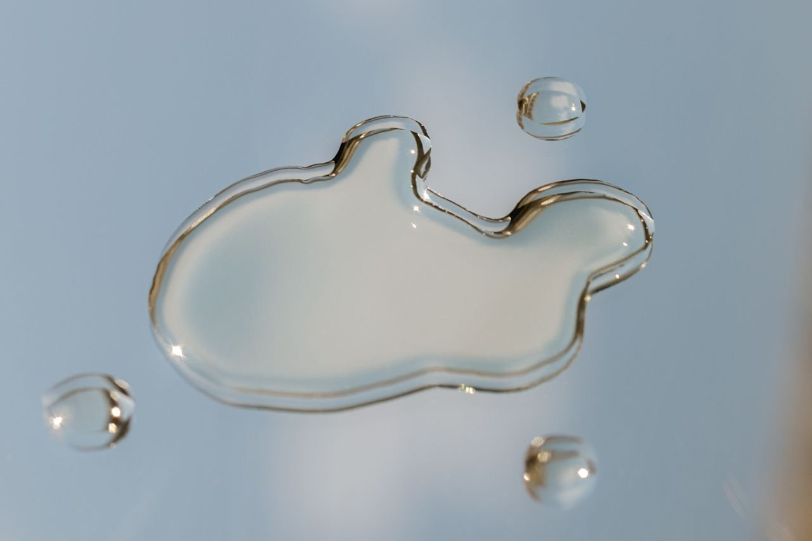

Hyaluronic Acid Doesn’t Burn

The one skin care ingredient you can't seem to escape no matter what your skin care concerns or skin conditions might be: hyaluronic acid (HA). It’s in everything! Skin care enthusiasts, estheticians, and dermatologists all agree on utilizing HA in your routine yet when *you* use it, you don't get what all the hype is about. Let this post serve as your definitive guide to the most ubiquitous ingredient in the skincare industry.
What is Hyaluronic Acid?
Contrary to the word “acid” being in the name, it isn’t an exfoliant. The term "acid" here refers to its chemical classification rather than its effect on skin. In chemistry, substances that can donate protons (hydrogen ions) in a solution are classified as acids. Hyaluronic acid contains carboxyl groups (-COOH) in its molecular structure that can release hydrogen ions in solution, making it technically an acid by chemical definition. So, no, it won’t burn you or cause you to overexfoliate your skin.
Hyaluronic acid is a naturally occurring sugar molecule in our bodies (including our skin). It's a remarkably versatile molecule that serves crucial functions in multiple systems and tissues. HA is most abundant in our joints, eyes, connective tissues, and extracellular matrices throughout the body, where it serves critical roles beyond mere hydration. Through its remarkable water-binding capacity, HA creates essential tissue volume and lubrication, particularly in synovial fluid where it cushions joints, while simultaneously participating in cellular signaling pathways that regulate cell behavior and wound healing processes. This versatile compound also provides anti-inflammatory and antioxidant protection, creates selective molecular barriers to maintain tissue homeostasis, and contributes to the structural integrity of various tissues—functions that progressively diminish as natural HA production decreases with age.
In our topical skincare products, hyaluronic acid exhibits more humectant properties—meaning it aides in hydration by attracting and binding water molecules to the skin.
The Marketing Myth
One of the first things you’ll learn about hyaluronic acid when you go to look it up is that it “holds 1,000 times its weight in water”. This is a lie. It’s been repeated as fact in countless marketing materials, beauty blogs, and even some scientific articles, yet tracking down the original research that established this specific number proves remarkably difficult. It's a perfect example of citation laundering—where claims are repeated across sources until the original (potentially flawed) source becomes obscured.
More rigorous scientific studies suggest hyaluronic acid can bind approximately 200-300 times its weight in water under ideal laboratory conditions. This is still impressive, but obviously nowhere near the commonly cited 1,000 times figure.
This also highlights why formulation matters so much more than the marketing with hyaluronic acid products. Since the practical water-binding capacity is lower than advertised, the surrounding ingredients, delivery system, and application method become even more critical for achieving noticeable hydration benefits.
How To Actually Use Hyaluronic Acid
The good news here is that you are more than likely already using it. (Our Barrier Brew hydrating serum pairs Beta Glucan with HA.) It really is in everything—from cleansers to masks and everything in between. But the pro-tips below will help ensure you’re utilizing this ingredient in your routine in the most effective way.
HA works best on damp skin. Applying to completely dry skin limits its effectiveness dramatically. The molecule needs water to bind to, and without proper application technique, you're missing out on its full potential.
In dry climates or heated/air-conditioned environments, HA can actually pull moisture FROM your skin rather than TO it when not used properly. This counterintuitive effect explains why many people experience increased dryness after application.
If your routine is HA heavy, you always want to follow with rich emollients and/or occlusive moisturizers to lock the hydration in.
Remember that skincare is deeply personal, and even the most universally praised ingredients won't work identically for everyone. The key is informed experimentation and attention to how your unique skin responds.